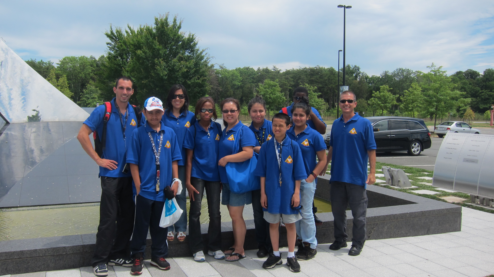
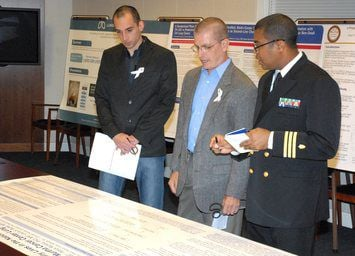
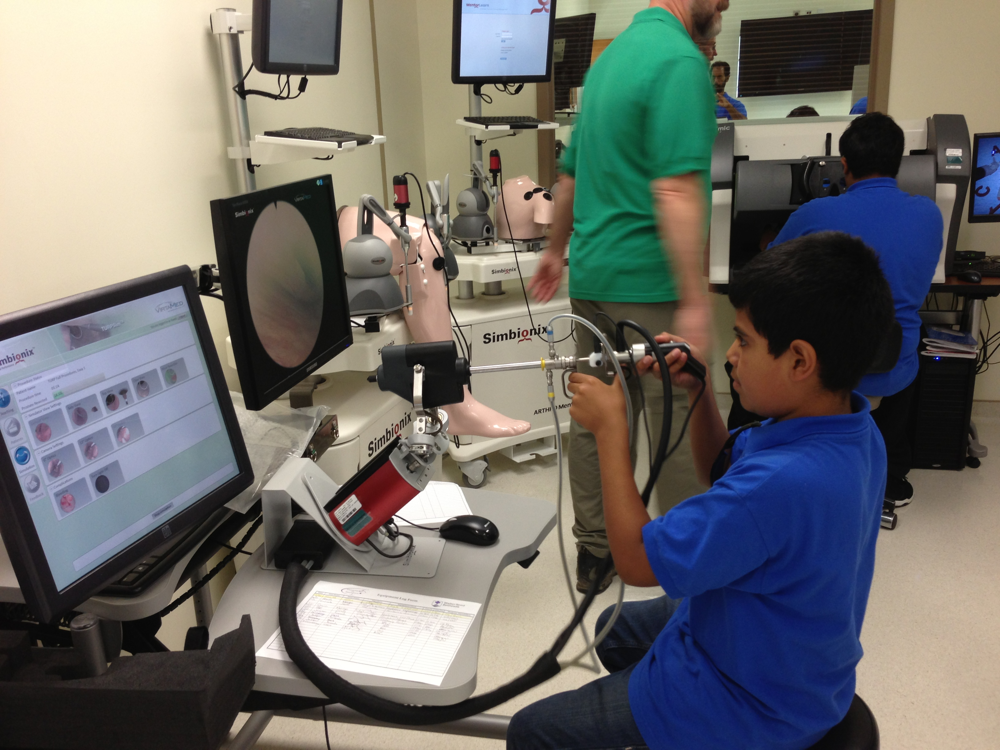
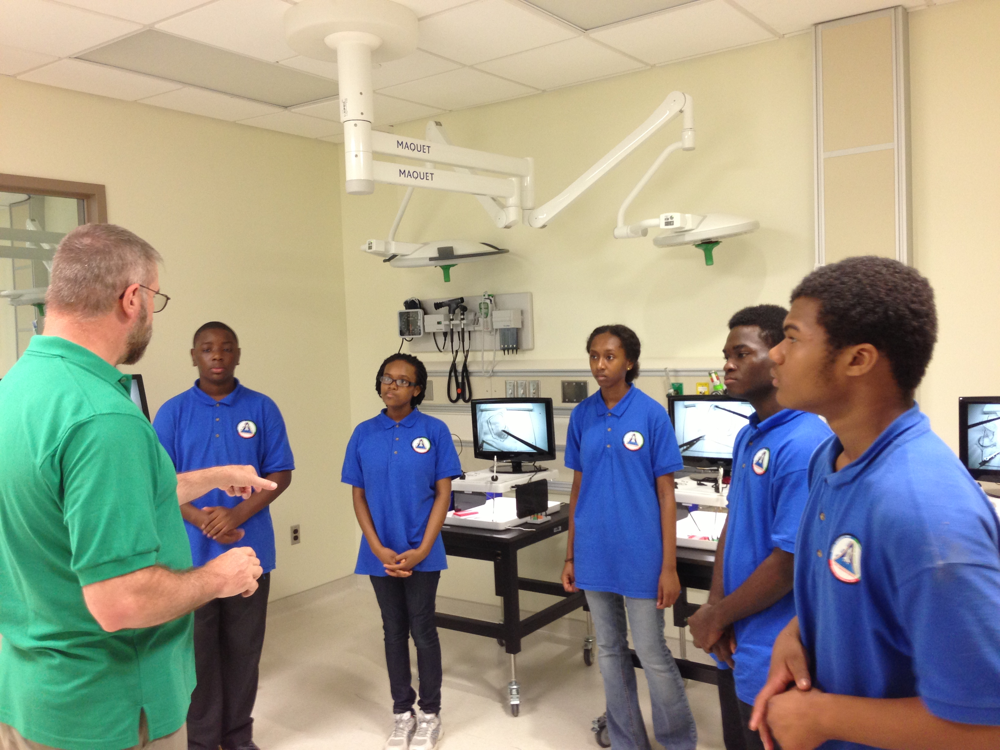

Why I care about how kids actually learn
For more than six years, I was part of SKM — a program built on a simple but stubborn idea: that kids, especially kids the system tends to overlook, are capable of real scientific thinking if you meet them where they are instead of just handing them facts to memorize. I served as an educator and mentor to students in the Space-medicine Summer Academy (SSA), working alongside underprivileged middle schoolers as they took their first steps into serious STEM environments — from after-school labs to hospital floors at Walter Reed.
What draws me to this kind of work is a deeper fascination with how people actually learn — not the version of learning that fits neatly into a test score, but the messier, more human process of a kid going from confused to curious to confident. Watching that shift happen, especially in students who'd been told in a hundred small ways that science "wasn't for them," is part of what shaped my thinking about learning systems more broadly.
My role wasn't just to explain science — it was to translate it. I took dense, technical concepts and found the plain-language version that let a twelve-year-old actually grasp what a cancer cell was doing, or why the scientific method mattered, without losing the substance in the process. But just as often, my job wasn't about the science at all. It was about standing in the gap between two worlds these kids were straddling — the abstract, orderly world of scientific inquiry, and the very real, very unpredictable world they went home to every day. Being present for that tension, and helping them hold both without having to choose, is some of the work I'm proudest of.



